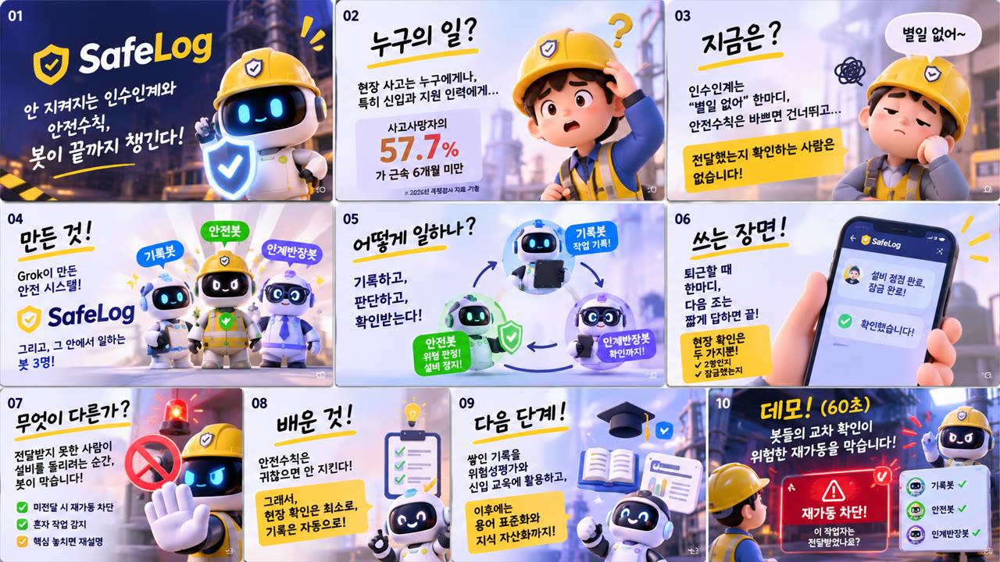

해커톤 출품 · Grok Bot Seoul Build Day
SafeLog
교대 근무 현장에서 퇴근 한마디가 끊기면, 다음 사람이 위험한 설비를 모르고 돌립니다.
- 기록봇 퇴근 한마디를 그대로 기록
- 안전봇 위험을 판정하고 설비를 보류
- 인계반장봇 다음 조가 알아들었다고 답할 때까지 전달

해커톤 출품
리허설 랩
먼저 끝까지 말하고, 다시 듣고, 내 말에서 나온 질문에 답하는 발표 연습 공간입니다. 강의 전 리허설을 위해 직접 만들었습니다.
- 공간 고르기 상담실 · 강의실 · 발표장
- 끝까지 발표 AI는 끼어들지 않습니다
- 다시 듣고 질문 받기 근거가 확인된 질문만